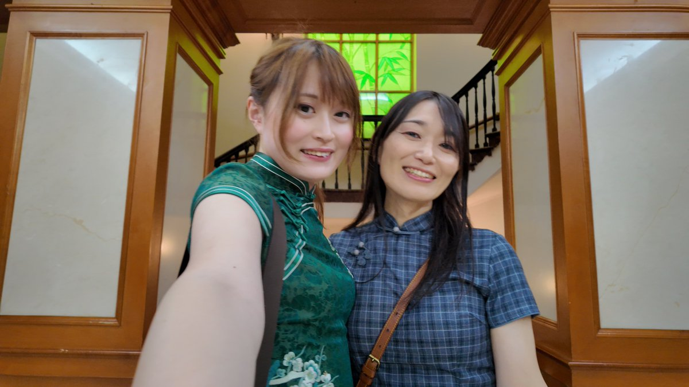

夜桜侵雪～
@Minecraftxfj
@ripo0079 谢谢你，愿世界和平

りぽたん
@ripo0079
我和我朋友去了的中国旅行非常好的！我很高兴！谢谢朋友，谢谢中国。
在抗日战争博物馆里，我仔细听了一下，确实听到了“小日本”这个词。还有一次，我回头的时候，似乎听见有人是对着我说的。
在那样的场所，所以我能够理解。
不过，后面还有一些很温暖的故事。 https://t.co/kIvoB5705G